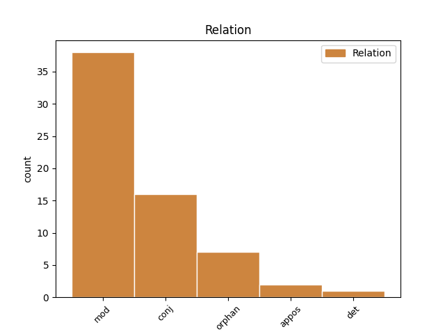
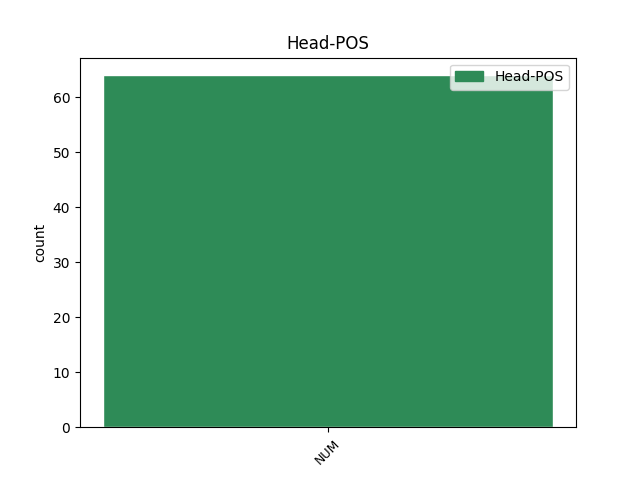
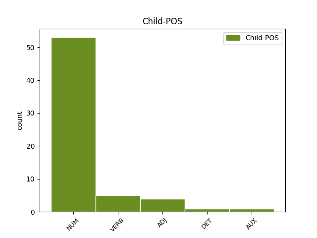

Distribution of features within this leaf



Agreement Rules sorted by frequency.
- When the dependent token is the modifer(mod) of the head token, and the head token is NUM and the dependent token is NUM.
1 пѧти пѧть NUM Ma Case=Gen|Gender=Fem|Number=Sing 0 _ _ _
2 десѧтъ десѧть NUM Ma Case=Gen|Gender=Fem,Masc|Number=Plur 1 mod _ ref=JOHN_8.57
3 лѣтъ _ _ _ _ 0 _ _ _
4 не _ _ _ _ 0 _ _ _
5 оу _ _ _ _ 0 _ _ _
6 имаши _ _ _ _ 0 _ _ _
7 ꙇ _ _ _ _ 0 _ _ _
8 аврама _ _ _ _ 0 _ _ _
9 ли _ _ _ _ 0 _ _ _
10 еси _ _ _ _ 0 _ _ _
11 видѣлъ _ _ _ _ 0 _ _ _
1 гребъше _ _ _ _ 0 _ _ _
2 же _ _ _ _ 0 _ _ _
3 ѣко _ _ _ _ 0 _ _ _
4 дъва _ _ _ _ 0 _ _ _
5 десѧтѣ _ _ _ _ 0 _ _ _
6 и _ _ _ _ 0 _ _ _
7 пѧть пѧть NUM Ma Case=Acc|Gender=Fem|Number=Sing 0 _ _ _
8 стадии _ _ _ _ 0 _ _ _
9 ли _ _ _ _ 0 _ _ _
10 ꙉ триѥ.десѧте NUM Ma Case=Acc|Gender=Fem,Masc|Number=Plur 7 conj _ ref=JOHN_6.19
11 ти _ _ _ _ 0 _ _ _
12 оузьрѣшѧ _ _ _ _ 0 _ _ _
13 и҃са _ _ _ _ 0 _ _ _
14 ходѧща _ _ _ _ 0 _ _ _
15 по _ _ _ _ 0 _ _ _
16 морю _ _ _ _ 0 _ _ _
17 ꙇ _ _ _ _ 0 _ _ _
18 близъ _ _ _ _ 0 _ _ _
19 кораблѣ _ _ _ _ 0 _ _ _
20 бꙑвъша _ _ _ _ 0 _ _ _
21 и _ _ _ _ 0 _ _ _
22 оубоѣшѧ _ _ _ _ 0 _ _ _
23 сѧ _ _ _ _ 0 _ _ _
1 бѫдетъ _ _ _ _ 0 _ _ _
2 бо _ _ _ _ 0 _ _ _
3 отъ _ _ _ _ 0 _ _ _
4 селѣ _ _ _ _ 0 _ _ _
5 пѧть _ _ _ _ 0 _ _ _
6 вь _ _ _ _ 0 _ _ _
7 единомъ _ _ _ _ 0 _ _ _
8 домоу _ _ _ _ 0 _ _ _
9 раздѣленъ _ _ _ _ 0 _ _ _
10 трие триѥ NUM Ma Case=Nom|Gender=Masc|Number=Plur 0 _ _ _
11 на _ _ _ _ 0 _ _ _
12 дъва _ _ _ _ 0 _ _ _
13 и _ _ _ _ 0 _ _ _
14 дъва дъва NUM Ma Case=Nom|Gender=Masc|Number=Dual 10 orphan _ ref=LUKE_12.52
15 на _ _ _ _ 0 _ _ _
16 три _ _ _ _ 0 _ _ _
17 ꙇ _ _ _ _ 0 _ _ _
18 раздѣлѧтъ _ _ _ _ 0 _ _ _
19 сѧ _ _ _ _ 0 _ _ _
20 отъцъ _ _ _ _ 0 _ _ _
21 на _ _ _ _ 0 _ _ _
22 с҃нъ _ _ _ _ 0 _ _ _
23 ꙇ҅ _ _ _ _ 0 _ _ _
24 с҃нъ _ _ _ _ 0 _ _ _
25 на _ _ _ _ 0 _ _ _
26 о҃тъца _ _ _ _ 0 _ _ _
27 мати _ _ _ _ 0 _ _ _
28 на _ _ _ _ 0 _ _ _
29 дъштерь _ _ _ _ 0 _ _ _
30 и _ _ _ _ 0 _ _ _
31 дъшти _ _ _ _ 0 _ _ _
32 на _ _ _ _ 0 _ _ _
33 матерь _ _ _ _ 0 _ _ _
34 свекрꙑ _ _ _ _ 0 _ _ _
35 на _ _ _ _ 0 _ _ _
36 невѣстѫ _ _ _ _ 0 _ _ _
37 своѭ _ _ _ _ 0 _ _ _
38 и _ _ _ _ 0 _ _ _
39 невѣста _ _ _ _ 0 _ _ _
40 на _ _ _ _ 0 _ _ _
41 свекровь _ _ _ _ 0 _ _ _
42 своѭ _ _ _ _ 0 _ _ _
1 и _ _ _ _ 0 _ _ _
2 призъвавъ _ _ _ _ 0 _ _ _
3 единого ѥдинъ NUM Ma Case=Gen|Gender=Masc|Number=Sing 0 _ _ _
4 когожъдо къжьдо ADJ Px Case=Gen|Gender=Masc,Neut|Number=Sing 3 appos _ ref=LUKE_16.5
5 длъжьникъ _ _ _ _ 0 _ _ _
6 господи _ _ _ _ 0 _ _ _
7 своего _ _ _ _ 0 _ _ _
8 г҃лааше _ _ _ _ 0 _ _ _
9 пръвоумоу _ _ _ _ 0 _ _ _
1 Еще _ _ _ _ 0 _ _ _
2 же _ _ _ _ 0 _ _ _
3 емоу _ _ _ _ 0 _ _ _
4 г҃лѭштю _ _ _ _ 0 _ _ _
5 се _ _ _ _ 0 _ _ _
6 народъ _ _ _ _ 0 _ _ _
7 и _ _ _ _ 0 _ _ _
8 нарицаемꙑ нарицати VERB V- Case=Nom|Gender=Masc|Number=Sing|Strength=Weak|Tense=Pres|VerbForm=Part|Voice=Pass 10 mod _ ref=LUKE_22.47
9 июда _ _ _ _ 0 _ _ _
10 единъ ѥдинъ NUM Ma Case=Nom|Gender=Masc|Number=Sing 0 _ _ _
11 отъ _ _ _ _ 0 _ _ _
12 обою _ _ _ _ 0 _ _ _
13 на _ _ _ _ 0 _ _ _
14 десѧте _ _ _ _ 0 _ _ _
15 прѣдъ _ _ _ _ 0 _ _ _
16 ними _ _ _ _ 0 _ _ _
17 идѣаше _ _ _ _ 0 _ _ _
18 и _ _ _ _ 0 _ _ _
19 пристѫпи _ _ _ _ 0 _ _ _
20 къ _ _ _ _ 0 _ _ _
21 і҃сви _ _ _ _ 0 _ _ _
22 лобъзатъ _ _ _ _ 0 _ _ _
23 его _ _ _ _ 0 _ _ _
1 оунѣе _ _ _ _ 0 _ _ _
2 емоу _ _ _ _ 0 _ _ _
3 би _ _ _ _ 0 _ _ _
4 бꙑло _ _ _ _ 0 _ _ _
5 аште _ _ _ _ 0 _ _ _
6 би _ _ _ _ 0 _ _ _
7 камень _ _ _ _ 0 _ _ _
8 жръновънꙑ _ _ _ _ 0 _ _ _
9 възложенъ _ _ _ _ 0 _ _ _
10 на _ _ _ _ 0 _ _ _
11 вꙑѭ _ _ _ _ 0 _ _ _
12 его _ _ _ _ 0 _ _ _
13 ꙇ _ _ _ _ 0 _ _ _
14 въвръженъ _ _ _ _ 0 _ _ _
15 въ _ _ _ _ 0 _ _ _
16 море _ _ _ _ 0 _ _ _
17 неже _ _ _ _ 0 _ _ _
18 да _ _ _ _ 0 _ _ _
19 сканъдалисаатъ _ _ _ _ 0 _ _ _
20 малꙑихъ малъ ADJ A- Case=Gen|Degree=Pos|Gender=Masc|Number=Plur|Strength=Weak 22 mod _ ref=LUKE_17.2
21 сихь _ _ _ _ 0 _ _ _
22 единого ѥдинъ NUM Ma Case=Gen|Gender=Masc|Number=Sing 0 _ _ _
1 и _ _ _ _ 0 _ _ _
2 поѩтъ _ _ _ _ 0 _ _ _
3 въторꙑ _ _ _ _ 0 _ _ _
4 женѫ _ _ _ _ 0 _ _ _
5 ꙇ _ _ _ _ 0 _ _ _
6 тъ _ _ _ _ 0 _ _ _
7 оумьрѣтъ _ _ _ _ 0 _ _ _
8 бештѧдьнъ _ _ _ _ 0 _ _ _
9 и _ _ _ _ 0 _ _ _
10 трети _ _ _ _ 0 _ _ _
11 поѩтъ _ _ _ _ 0 _ _ _
12 ѭ _ _ _ _ 0 _ _ _
13 такожде _ _ _ _ 0 _ _ _
14 же _ _ _ _ 0 _ _ _
15 и _ _ _ _ 0 _ _ _
16 вьсѣ вьсь DET Px Case=Nom|Gender=Fem|Number=Sing 17 det _ ref=LUKE_20.31
17 седмь седмь NUM Ma Case=Nom|Gender=Fem|Number=Sing 0 _ _ _
18 оумьрѣшѧ _ _ _ _ 0 _ _ _
19 не _ _ _ _ 0 _ _ _
20 оставльше _ _ _ _ 0 _ _ _
21 чѧдъ _ _ _ _ 0 _ _ _
1 ꙇ _ _ _ _ 0 _ _ _
2 помѣнѫшѧ _ _ _ _ 0 _ _ _
3 г҃лꙑ _ _ _ _ 0 _ _ _
4 его _ _ _ _ 0 _ _ _
5 ꙇ _ _ _ _ 0 _ _ _
6 възвраштъшѧ _ _ _ _ 0 _ _ _
7 сѧ _ _ _ _ 0 _ _ _
8 отъ _ _ _ _ 0 _ _ _
9 гроба _ _ _ _ 0 _ _ _
10 вьзвѣстишѧ _ _ _ _ 0 _ _ _
11 вьсѣ _ _ _ _ 0 _ _ _
12 си _ _ _ _ 0 _ _ _
13 единомоу ѥдинъ NUM Ma Case=Dat|Gender=Masc|Number=Sing 0 _ _ _
14 на _ _ _ _ 0 _ _ _
15 десѧте _ _ _ _ 0 _ _ _
16 и _ _ _ _ 0 _ _ _
17 вьсѣмъ _ _ _ _ 0 _ _ _
18 прочиимъ прочь ADJ A- Case=Dat|Degree=Pos|Gender=Masc|Number=Plur|Strength=Weak 13 conj _ ref=LUKE_24.9
Disagree Examples:
1 дроугаа _ _ _ _ 0 _ _ _
2 же _ _ _ _ 0 _ _ _
3 падѫ _ _ _ _ 0 _ _ _
4 на _ _ _ _ 0 _ _ _
5 земи _ _ _ _ 0 _ _ _
6 добрѣ _ _ _ _ 0 _ _ _
7 ꙇ _ _ _ _ 0 _ _ _
8 даѣхѫ _ _ _ _ 0 _ _ _
9 плодъ _ _ _ _ 0 _ _ _
10 ово _ _ _ _ 0 _ _ _
11 съто _ _ _ _ 0 _ _ _
12 ово _ _ _ _ 0 _ _ _
13 шесть шесть NUM Ma Case=Acc|Gender=Fem|Number=Sing 0 _ _ _
14 десѧтъ десѧть NUM Ma Case=Gen|Gender=Fem,Masc|Number=Plur 13 mod _ ref=MATT_13.8
15 ово _ _ _ _ 0 _ _ _
16 три _ _ _ _ 0 _ _ _
17 десѧти _ _ _ _ 0 _ _ _
1 ѣдѫщихъ _ _ _ _ 0 _ _ _
2 же _ _ _ _ 0 _ _ _
3 бѣ _ _ _ _ 0 _ _ _
4 мѫжъ _ _ _ _ 0 _ _ _
5 ѣко _ _ _ _ 0 _ _ _
6 пѧть пѧть NUM Ma Case=Nom|Gender=Fem|Number=Sing 0 _ _ _
7 тꙑсѫщь тꙑсѧщи NUM Ma Case=Gen|Gender=Fem|Number=Plur 6 mod _ ref=MATT_14.21
8 развѣ _ _ _ _ 0 _ _ _
9 женъ _ _ _ _ 0 _ _ _
10 и _ _ _ _ 0 _ _ _
11 дѣтеи _ _ _ _ 0 _ _ _
1 не _ _ _ _ 0 _ _ _
2 оу _ _ _ _ 0 _ _ _
3 ли _ _ _ _ 0 _ _ _
4 разоумѣсте _ _ _ _ 0 _ _ _
5 ни _ _ _ _ 0 _ _ _
6 помьните _ _ _ _ 0 _ _ _
7 д҃ _ _ _ _ 0 _ _ _
8 хлѣбъ _ _ _ _ 0 _ _ _
9 пѧти пѧть NUM Ma Case=Dat,Gen|Gender=Fem|Number=Sing 0 _ _ _
10 тꙑсѫштъ тꙑсѧщи NUM Ma Case=Gen|Gender=Fem|Number=Plur 9 mod _ ref=MATT_16.9
11 ꙇ _ _ _ _ 0 _ _ _
12 колико _ _ _ _ 0 _ _ _
13 кошъ _ _ _ _ 0 _ _ _
14 вьзѧсте _ _ _ _ 0 _ _ _
1 ни _ _ _ _ 0 _ _ _
2 ли _ _ _ _ 0 _ _ _
3 ж҃ седмь NUM Ma Case=Acc|Gender=Fem|Number=Sing 0 _ _ _
4 хлѣбъ _ _ _ _ 0 _ _ _
5 четꙑремъ _ _ _ _ 0 _ _ _
6 тꙑсѫштамъ тꙑсѧщи NUM Ma Case=Dat|Gender=Fem|Number=Plur 3 mod _ ref=MATT_16.10
7 ꙇ _ _ _ _ 0 _ _ _
8 колико _ _ _ _ 0 _ _ _
9 кошъницъ _ _ _ _ 0 _ _ _
10 възѧсте _ _ _ _ 0 _ _ _
1 и _ _ _ _ 0 _ _ _
2 аще _ _ _ _ 0 _ _ _
3 обрѧщетъ _ _ _ _ 0 _ _ _
4 ѭ҄ _ _ _ _ 0 _ _ _
5 аминь _ _ _ _ 0 _ _ _
6 г҃лѭ _ _ _ _ 0 _ _ _
7 вамъ _ _ _ _ 0 _ _ _
8 ѣко _ _ _ _ 0 _ _ _
9 радоуетъ _ _ _ _ 0 _ _ _
10 сѧ _ _ _ _ 0 _ _ _
11 о _ _ _ _ 0 _ _ _
12 неи _ _ _ _ 0 _ _ _
13 паче _ _ _ _ 0 _ _ _
14 неже _ _ _ _ 0 _ _ _
15 о _ _ _ _ 0 _ _ _
16 девѧти девѧть NUM Ma Case=Loc|Gender=Fem|Number=Sing 0 _ _ _
17 десѧтъ десѧть NUM Ma Case=Gen|Gender=Fem,Masc|Number=Plur 16 mod _ ref=MATT_18.13
18 и _ _ _ _ 0 _ _ _
19 девѧти _ _ _ _ 0 _ _ _
20 не _ _ _ _ 0 _ _ _
21 заблѫждьшиихъ _ _ _ _ 0 _ _ _